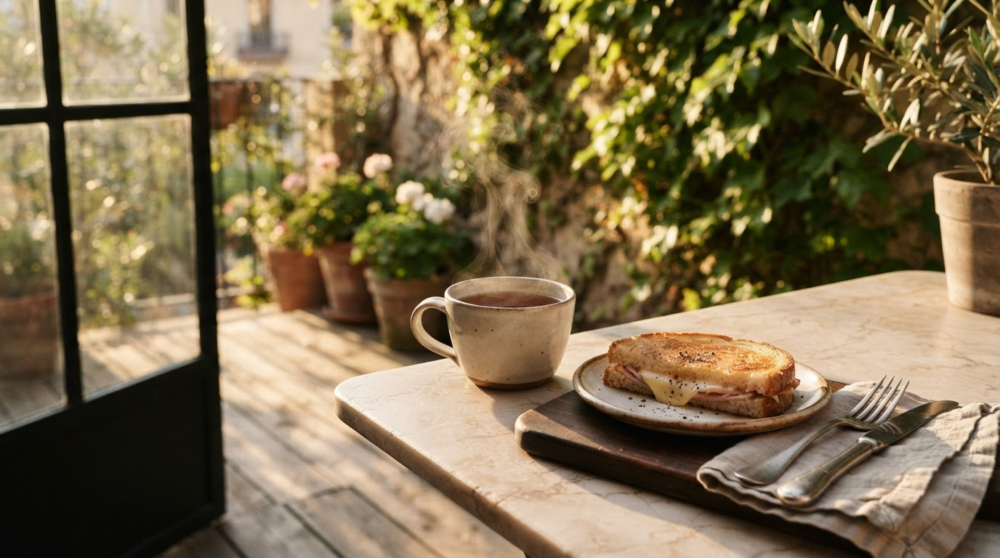
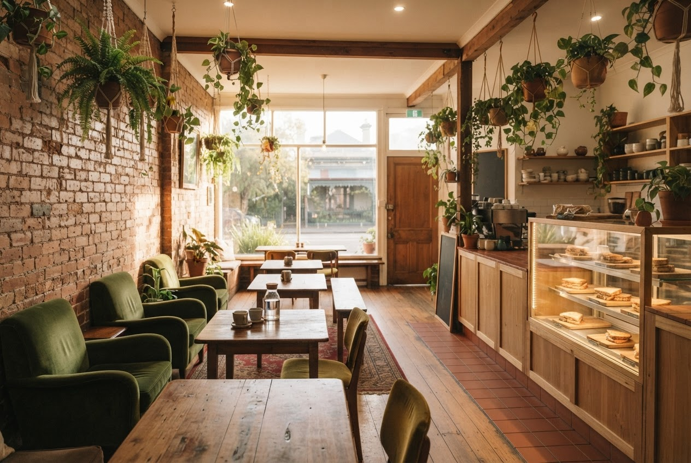

01 Signature
The Toastie Cabinet
A whole cabinet of toasted sourdough sandwiches — ham & gruyère croissant, crumbed chicken, the classic cheese. Each one pressed, buttered and brought to you hot.
Pairs with a real leaf tea, brewed to order.
A$12–16

Clarendon Street · South Melbourne · Since 2009
Real tea brewed to order. Toasted sourdough toasties. A cozy, sun-drenched corner where the mornings slow down.
Explore the MenuThe Neighborhood Pulse

“A lovely relaxing place to start my day with a great coffee and chilled music.”
A regular morning
“Such a cozy hidden gem with the kindest service ever. The perfect place for toasties.”
Fufu · Local Guide
“Real tea, made to order. I’m a tea snob and this place does it properly.”
John B.
The Journey
Find us
387 Clarendon StOpening hours
Updated by the café. Kettle’s always ready by 7.